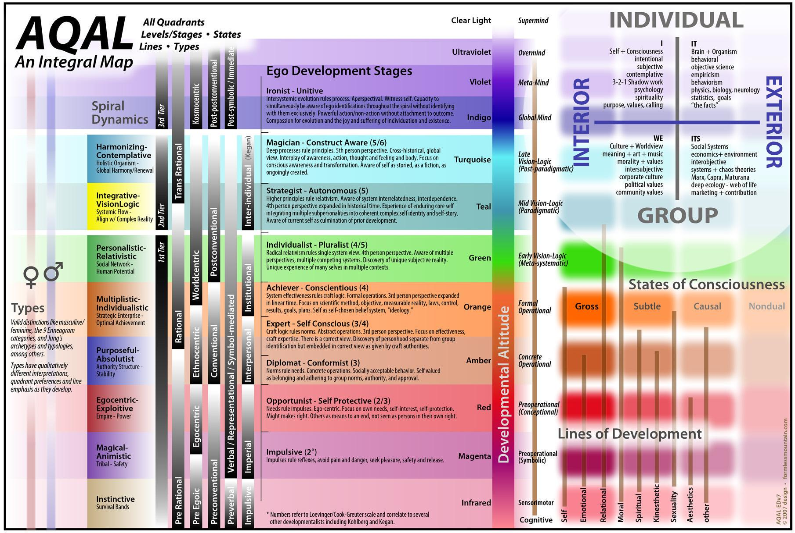
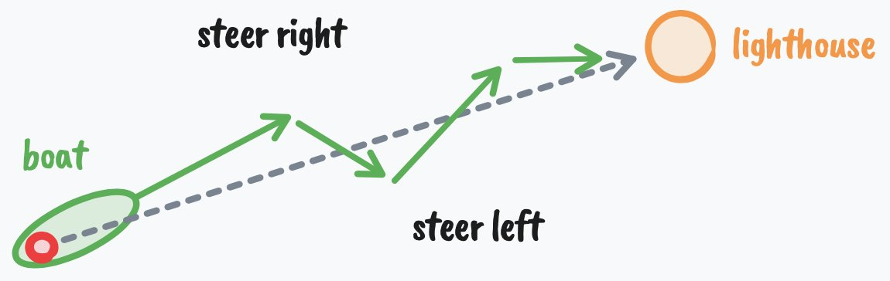

If you're anything like me, you think new years resolutions are stupid.
Because most people go about changing their lives in the completely wrong way. They create these resolutions because everyone else does – we create a superficial meaning out of status games – but they don’t meet the requirements for true change, which goes a lot deeper than convincing yourself you’re going to be more disciplined or productive this year.
If you're one of these people, I'm not here to talk down on you (I tend to be a bit harsh in my writing). I’ve quit 10x more goals than I’ve achieved. I think that should be the case for most people. But the fact that people try to change their lives and utterly fail almost every time holds true.
However, as much as I think new years resolutions are stupid, it’s always wise to reflect on the life you hate so you can launch yourself toward something that much better, as we will discuss.
So whether you want to start the business, transform your body, or take the risk toward a more meaningful life without quitting after 2 weeks, I want to share 7 ideas you probably haven’t heard before on behavior change, psychology, and productivity so you can do just that in 2026.
This will be comprehensive.
This isn’t one of those letters that you read through and forget about.
This is something you will want to bookmark, take notes on, and set aside time to think about.
The protocol at the end (to dig deep into your psyche and uncover what you truly want in life) will take about a full day to complete, with effects that last far longer than that.
Let’s begin.
I – You aren’t where you want to be because you aren’t the person who would be there
When it comes to setting big goals, people tend to focus on one of the two requirements for success:
- Changing your actions to make progress toward the goal (least important, second order)
- Changing who you are so that your behavior naturally follows (most important, first order)
Most people set a surface-level goal, hype themselves up to remain disciplined for the first few weeks, then go back to their old ways without much struggle, because they were trying to build a great life on a rotting foundation.
If this doesn’t make sense, let’s run through an example.
Think of somebody successful. It can be a bodybuilder with a great physique, a founder/CEO worth hundreds of millions, or a charismatic dude who can chat up a group without a shred of anxiety entering his mind.
Do you think the bodybuilder has to “grind” to eat healthy? Does the CEO have to discipline themselves to show up and lead the team? To you, it may seem like that on the surface, but the truth is that they can’t see themselves living any other way. The bodybuilder has to grind to eat unhealthily. The CEO has to force themself to lie in bed past their alarm clock, and they hate every second of it (there is nuance here, just entertain me for a second).
To some people, my own lifestyle seems a bit extreme and disciplined. To me, it’s natural, and I don’t say that to contrast it with any other kind of lifestyle. I simply enjoy living this way. When my mom tells me that I should take a break, go out, and have some fun... I hold my tongue from telling her, “If I weren’t having fun, why would I be doing what I’m doing?”
This next sentence may sound simple, but it is baffling how many people don't get it.
If you want a specific outcome in life, you must have the lifestyle that creates that outcome long before you reach it.
If someone says they want to lose 30 pounds, I often don’t believe them. Not because I don’t think they are capable, but because there are too many times when that same person says, “I can’t wait until I'm done losing weight so I can start to enjoy life again.” I hate to break it to you, but if you don’t adopt the lifestyle that led to you losing the weight, for life, and find a reason with a higher gravitational pull than the one tying you to your previous ways, then you will go straight back to where you started, and you can unhappily say that you wasted the resource you will never get back: time.
When you truly change yourself, all of your habits that don’t move the needle toward your goal become disgusting, because you have a deep and profound awareness of what kind of life those actions compound into. You are okay with your current standards because you are not fully aware of what they are or what they lead to. We will discuss how to uncover this, but we need to build up to that.
You say you want to change. You say you want to “become financially free” and “get healthy,” but your actions show otherwise for a reason. And it goes a lot deeper than you think.
II – You aren’t where you want to be because you don’t want to be there
Trust only movement. Life happens at the level of events, not of words. Trust movement.
If you want to change who you are, you must understand how the mind works so that you can start to reprogram it.
The first step to understanding the mind is to understand that all behavior is goal-oriented. It's teleological. When you think about it, this is kinda obvious, but when we dig into it, most people don’t want to hear it.
You take a step forward because you want to reach a certain location.
You scratch your nose because you want to make the itch go away.
Those ones are clear, but most of the time, your goals are unconscious. You may not realize that when you sit on the couch in the middle of the day, you are trying to burn time before your next responsibility, as one simple example.
On an even more unconscious and complex level, you pursue goals that can harm you, but you justify your actions in a way that is socially acceptable and doesn’t make you seem like a loser.
As an example, if you can’t stop procrastinating your work, you may justify it with the fact that you “lack discipline,” but in reality, you are attempting to achieve a goal like you always are. In this case, that goal could be to protect yourself from the judgment that comes from finishing and sharing your work.
If you say you want to quit your dead-end job, but stay in it without any real reason, you may start to think you don’t have enough courage, or that you were never really a “risk taker,” but the truth is that you are pursuing the goal of safety, predictability, and an excuse to not look like a failure to everyone else in your life who sees working a dead-end job as a sign of success.
The lesson here is that real change requires changing your goals.
I don’t mean setting some surface-level goal because the act of doing that serves an unconscious goal that is actually harming you. That’s been ran through enough in the productivity space. I mean changing your point of view. Because that’s what a goal is. A goal is a projection into the future that acts as a lens of perception which allows you to notice information, ideas, and resources that aid in you achieving that goal.
Now let’s dig a bit deeper, because if you don’t understand this, it only becomes more difficult to get out.
I send out letters like these 1-2x a week. If you don’t want to miss them, join here. You can also read my book free, other letters, etc.
III – You aren’t where you want to be because you’re afraid to be there
The important thing for you to remember is that it does not matter in the least how you got the idea or where it came from. You may never have met a professional hypnotist. You may never have been formally hypnotized. But if you have accepted an idea - from yourself, your teachers, your parents, friends, advertisements, from any other source - and further, if you are firmly convinced that idea is true, it has the same power over you as the hypnotist’s words have over the hypnotized subject.
Here’s how you’ve become who you are today, and how you will become who you will be tomorrow. This is the anatomy of identity:
- You want to achieve a goal
- You perceive reality through the lens of that goal
- You only notice “important” information and ideas that allows you to achieve that goal (learning)
- You act toward that goal and receive feedback that you are progressing toward it
- You repeat that behavior until it becomes automatic and unconscious (conditioning)
- That behavior becomes a part of who you think you are (”I am the type of person who...”)
- You defend your identity to maintain psychological consistency
- Your identity shapes new goals, restarting the cycle, and if that identity is disadvantageous toward a good life, this gets bad very quick
The unfortunate reality is that you must break the cycle between steps 6 and 7, but this process starts when you are a child.
You have the goal of survival.
You are dependent on your parents to teach you how to survive. You had to conform. And since the way most people teach is through reward and punishment, unless you adopt their beliefs and values, you will be punished. You don’t actually think for yourself until you see through this.
But your parents have also gone through this process throughout their entire lives. That’s where it can get dangerous. Your parents, unless they broke the pattern themselves, were conditioned by the culturally accepted ideas of success from the Industrial age. They also carry the best and worst conditioning from their parents and their parents’ parents.
To take it a layer deeper, once you fulfill your physical survival needs (which is quite easy to do in today’s world, you’re practically born into safety), you start to survive on the conceptual or ideological level. You may not try to protect and reproduce your body, but you absolutely protect and reproduce your mind. It’s not difficult to see the war of ideas on the internet, and the participants are individual and group identities.
When your body feels threatened, you go into fight or flight.
When your identity feels threatened, the same thing happens.
If you are heavily identified with a political ideology (by the process we talked about just before), you will feel threatened when someone challenges your beliefs. You literally feel the stress. You feel, emotionally, like you were just slapped in the face. Since most people don’t analyze their emotions for truth, you tend to get stuck in echo chambers and double down on claims that harm yourself and others.
If you were raised in a religious household, and did not think for yourself, you will fight and attack others who threaten your psychological safety within that little bubble.
The same thing happens when you unconsciously see yourself as a lawyer, a gamer, or somebody else who would not take the actions to achieve a better life.
IV – The life you want lies within a specific level of mind
The mind evolves through predictable stages over time.
When you’re born, you’re like a little survival sponge that absorbs whatever beliefs you can (which are heavily dictated by your culture) so that you can feel safe and secure. And if you don’t be careful, your mind may crystalize and it may make it difficult to live a meaningful life.
This has been documented enough in models like Maslow’s Hierarchy, Greuter’s stages of ego development, Spiral Dynamics, and Integral Theory, each building off of one another, but it’s also not difficult to observe in society.
I’ve talked about these many times, and synthesized them into my own Human 3.0 model with various AI prompts to uncover your level of development and a path forward (open in a tab to read after if you'd like), but here’s the 80/20 of the 9 stages of ego development as a refresher (because repetition helps reveal things you didn’t notice before, and there are new people reading these letters):

- Impulsive — No separation between impulse and action. Black and white thinking. I.e. A toddler hits when angry because the feeling and the behavior are the same thing.
- Self-Protective — The world is dangerous and you learn to look out for yourself. I.e. A kid learns to hide report cards, lie about chores, and figure out what adults want to hear.
- Conformist — You are your group and its rules feel like reality itself. I.e. Someone who genuinely cannot fathom why anyone would vote differently than their family or group.
- Self-Aware — You notice you have an inner life that doesn’t match the exterior. I.e. Sitting in church and realizing you’re not sure you believe what everyone around you seems to believe, but not knowing what to do with that feeling yet.
- Conscientious — You build your own system of principles and hold yourself accountable to them. I.e. Leaving your family’s religion after careful study and adopting a personal philosophy you can defend, or building a career plan with clear milestones because you believe the right effort yields the right results.
- Individualist — You see that your principles were shaped by context and start holding them more loosely. I.e. Realizing your political views have more to do with where you grew up than objective truth, or noticing that your ambitious career goals were really about earning your father’s approval.
- Strategist — You work with systems while aware of your own involvement in them. I.e. Leading an organization while actively questioning your own blind spots, or engaging in politics knowing your perspective is partial and shaped by bias you can’t fully see.
- Construct-Aware — You see all frameworks, including your identity, as useful fictions. I.e. Holding your spiritual beliefs with metaphorically not literally, knowing the map is not the territory, or watching yourself play the role of “founder” or “thought leader” with a kind of gentle amusement.
- Unitive — Separation between self and life dissolves. I.e. Work, rest, and play feel like the same thing. There’s no one left who needs to become something, just presence responding to what arises.
For most people reading this, I would assume you hover between 4 and 8, which is a huge gap. Those closer to 8 are reading this are doing so to either learn something or pass time in a non-destructive way. Those closer to 4 are really looking for a change. You feel like you are meant for more, but you can’t make sense of everything yet, because there’s obviously a lot at play.
The good thing is, it doesn’t really matter what stage you are in, because moving through any of them follows a pattern.
V – Intelligence is the ability to get what you want out of life
The only real test of intelligence is if you get what you want out of life.
There is a formula for success.
One ingredient is agency.
One ingredient is opportunity (which many people like to mistake as “privilege” - because they the other ingredients).
The last ingredient is intelligence.
If you have high agency but low opportunity, it doesn’t matter how likely you are to act toward a goal, because it isn’t a goal that will bear much fruit.
If you have opportunity and agency but low intelligence, then you will never be fully able to benefit from that opportunity.
First, we’ve talked about agency before here. In terms of opportunity, I can’t tell you to change your physical location, but if you don’t see the abundance of digital opportunity right in front of you, I don’t know what to tell you.
With that said, I want to focus on what intelligence is in the context of these two other ingredients and this letter. For that, we look to cybernetics.
Cybernetics comes from the greek word kybernetikos which means “to steer” or “good at steering.”
It’s also known as “the art of getting what you want.”
So, if Naval’s definition of intelligence is getting what you want out of life, understanding cybernetics helps you do that much faster.
Cybernetics illustrates the properties of intelligent systems.
- To have a goal.
- Act toward that goal.
- Sense where you are.
- Compare it to the goal.
- And act again based on that feedback.

You can judge intelligence based on the system’s ability to iterate and persist with trial and error.
A ship blown off course that corrects toward its destination. A thermostat sensing a change in heat and turning on. The pancreas excreting insulin after blood glucose spikes.
What does this have to do with getting what you want out of life?
Everything.
Acting, sensing, comparing, and understanding the system from a meta-perspective is fundamental to high intelligence (with the definition we are using here).
High intelligence is the ability to iterate, persist, and understand the big picture. The mark of low intelligence is the inability to learn from your mistakes.
Low-intelligence people get stuck on problems rather than solving them. They hit a roadblock and quit. Like a writer who fails to build a readership and quits because they lack the ability to try new things, experiment, and figure out a process that works for them (to think that there isn’t an effective process you can create is verifiably false, no matter your limiting beliefs, hence being low intelligence.)
High intelligence is realizing any problem can be solved on a large enough timescale. The reality is that you can achieve any goal you set your mind to.
Intelligence is realizing that there is a series of choices you can make which lead to achieving the goal you want. You understand that ideas are hierarchical and that you can’t go from papyrus to Google docs in one fell swoop. Even if that goal is impossible right now, you simply don’t have the resources – which may be invented over the next few years – to achieve that thing.
When I talk about “goals,” and as I will continue repeating, I am not speaking from the typical lens of self-help, although that’s a helpful lens to adopt at times.
I am speaking from the lens of teleology or the Greek kosmos – that everything serves a purpose. That everything is a part of a greater whole.
Goals determine how you see the world.
Goals determine what you consider “success” or “failure.”
You can try to “enjoy the journey,” but if you pursue the wrong goal, you will not enjoy it.
Your mind is the operating system for reality.
That system is composed of goals.
For most people, those goals are assigned to them. Programmed like lines of code in your psyche.
Go to school. Get the job. Get offended. Play victim. Retire at 65.
A known path that doesn’t work.
To become more intelligent, you must:
- Reject the known path
- Dive into the unknown
- Set new, higher goals to expand your mind
- Embrace the chaos and allow for growth
- Study the generalized principles of nature
- Become a deep generalist
I understand this may not be the traditional definition of intelligence, but that sequence of steps leads to an extraordinary level of connections in your brain, leading to what we would observe as an intelligent person. Pair that with agency and you've got a winner.
That leads us into the next section perfectly.
VI – How to launch into a completely new life (in 1 day)
The best periods of my life always came after a period of getting absolutely fed up with the lack of progress I was making.
How do you dig into your mind?
How do you become aware of your conditioning?
How do you reach profound insights and truths that change the trajectory of your life?
Through the simple, but often painful act of questioning.
Something that so few people do, and you can tell by how they speak or give their thoughts on a specific topic. Questioning is thinking, and very few people do it.
I want to give you a comprehensive protocol that you can use every year to reset your life and launch into a season of intense progress. This protocol helps you ask the right questions.
These questions will cover the macro to the micro: where you want to be, what you need to do to get there, and what you can do immediately to start moving the needle toward that reality.
This will require one full day to complete, so I recommend you follow along with the exact protocol. You will need a pen, paper, and an open mind.
When I observe patterns in people who successfully flip their identity, it happens fast after a build up of tension. Specifically, I’ve noticed 3 phases that people tend to go through.
- Dissonance – They feel like they don’t belong in their current life, and become sufficiently fed up with their lack of progress.
- Uncertainty – They don’t know what comes next, so they either experiment or get lost and feel worse.
- Discovery – They discover what they want to pursue and make 6 years of progress in 6 months.
So, our goal with this protocol is to help you reach the point of dissonance, navigate through uncertainty, and discover what it truly is that you want to achieve, so much so that the clarity is overwhelming and distractions no longer hold their weight.
This protocol is structured so that it can be completed in one day. In the morning, you do a psychological excavation to uncover your own hidden motives. During the day, you prompt yourself with interrupts to keep you out of autopilot and contemplate your life. At night, you synthesize the insights into a direction you will start to move in tomorrow.
I cannot guarantee that this will work for everyone, because I cannot guarantee that everyone reading this is in the right chapter of their own story that would make these points impactful. You can’t place the climax at the start of the book and expect it to be interesting.
Part 1) Morning – Psychological Excavation – Vision & Anti-Vision
First we must create a new frame, or lens of perception, for your mind to operate from.
This is like creating a new shell, leaving your old one, and slowly growing into it over time. It won’t feel like it fits at first. That’s a good thing.
Set aside 15-30 minutes (the length of one YouTube video... you can do it) to think about and answer these questions. Do not attempt to outsource this contemplation to AI. I want you to break past the limiter that is on your mind. If you can’t answer these immediately, come back to them later.
- What is the dull and persistent dissatisfaction you’ve learned to live with? Not the deep suffering but what you’ve learned to tolerate. (If you don’t hate it, you will tolerate it)
- What do you complain about repeatedly but never actually change? Write down the three complaints you’ve voiced most often in the past year.
- For each complaint: What would someone who watched your behavior (not your words) conclude that you actually want?
- What truth about your current life would be unbearable to admit to someone you deeply respect?
Those questions are meant to make you aware of the pain in your current life. Now, we need to turn those into what I call an “anti-vision,” which is a brutal awareness of the life you do not want to live. That way, you can use that negative energy to aim your efforts in a positive direction and act from a place of intrinsic motivation.
- If absolutely nothing changes for the next five years, describe an average Tuesday. Where do you wake up? What does your body feel like? What’s the first thing you think about? Who’s around you? What do you do between 9am and 6pm? How do you feel at 10pm?
- Now do it but for ten years. What have you missed? What opportunities closed? Who gave up on you? What do people say about you when you’re not in the room?
- You’re at the end of your life. You lived the safe version. You never broke the pattern. What was the cost? What did you never let yourself feel, try, or become?
- Who in your life is already living the future you just described? Someone five, ten, twenty years ahead on the same trajectory? What do you feel when you think about becoming them?
- What identity would you have to give up to actually change? (”I am the type of person who...”) What would it cost you socially to no longer be that person?
- What is the most embarrassing reason you haven’t changed? The one that makes you sound weak, scared, or lazy rather than reasonable?
- If your current behavior is a form of self-protection, what exactly are you protecting? And what is that protection costing you?
If you answered those truthfully, and if you are in the right chapter of your life, you will feel a deep sense of dis-ease and possibly disgust for how you are currently living. Now, we need to orient that energy in a positive direction. We need to create a minimum viable vision, because your vision is like a product. It starts out unclear, but with time and experience, it grows stronger and more potent.
- Forget practicality for a minute. If you could snap your fingers and be living a different life in three years, not what’s realistic, what you actually want? What does an average Tuesday look like? Same level of detail as question 5.
- What would you have to believe about yourself for that life to feel natural rather than forced? Write the identity statement: “I am the type of person who...”
- What is one thing you would do this week if you were already that person?
Answer all of those first thing in the morning tomorrow.
Part 2) Throughout The Day – Interrupting Autopilot – Breaking Unconscious Patterns
These journaling exercises are cute, but we want real change.
Frankly, that’s not going to happen if you don’t break the current unconscious patterns that are keeping you the same.
Throughout the day, I want you to contemplate on everything you journaled in part one. Beyond that, I don’t want you to forget to contemplate. Please take this seriously. You aren’t going to change by doing the same thing for the rest of your life. You need to consciously force a pattern break.
Take the time right now to create reminders or calendar events in your phone. Include the question in the reminder or event so that you can immediately start thinking about it.
The more random and non-conflicting with your schedule there are, the better.
- 11:00am: What am I avoiding right now by doing what I’m doing?
- 1:30pm: If someone filmed the last two hours, what would they conclude I want from my life?
- 3:15pm: Am I moving toward the life I hate or the life I want?
- 5:00pm: What’s the most important thing I’m pretending isn’t important?
- 7:30pm: What did I do today out of identity protection rather than genuine desire? (Hint: it’s most things you do)
- 9:00pm: When did I feel most alive today? When did I feel most dead?
To add a bit more fuel to the fire, schedule these questions during times where you are either commuting, walking, or lying around.
- What would change if I stopped needing people to see me as [the identity you wrote in question 10]?
- Where in my life am I trading aliveness for safety?
- What’s the smallest version of the person I want to become that I could be tomorrow?
Part 3) Evening – Synthesizing Insight – Entering A Season Of Progress
If you followed that process, I would be surprised if you didn’t have at least one profound insight that could alter the course of your life. Now, we need to make those known, integrate them into who we are, and act on them to begin solidifying our journey to a new level of mind.
- After today, what feels most true about why you’ve been stuck?
- What is the actual enemy? Name it clearly. Not circumstances. Not other people. The internal pattern or belief that has been running the show.
- Write a single sentence that captures what you refuse to let your life become. This is your anti-vision compressed. It should make you feel something when you read it.
- Write a single sentence that captures what you’re building toward, knowing it will evolve. This is your vision MVP.
Lastly, we need to create goals.
Again, these aren’t goals that you set for the sake of achievement, because goals are just projections. They are unreliable and make you feel bound to something that will inevitably change. Instead, think of goals as a point of view. A lens that you can exchange to enter the right state of mind to perform the action that will lead away from the life you don’t want. Do not worry about some kind of finish line, because as we will find, it doesn’t exist. Enjoyment is found in progress.
- One-year lens: What would have to be true in one year for you to know you’ve broken the old pattern? One concrete thing.
- One-month lens: What would have to be true in one month for the one-year lens to remain possible?
- Daily lens: What are 2-3 actions you can timeblock tomorrow that the person you’re becoming would simply do?
That was a lot.
Hopefully it was helpful.
But we have one last piece to lock it all in.
Stick with me.
VII – Turn Your Life Into A Video Game
The optimal state of inner experience is one in which there is order in consciousness. This happens when psychic energy—or attention—is invested in realistic goals, and when skills match the opportunities for action. The pursuit of a goal brings order in awareness because a person must concentrate attention on the task at hand and momentarily forget everything else.
You now have all of the components that lead to a good life.
Now, it may be helpful to organize all of your insights into one coherent plan. Pull out a new page and write down these 6 components:
- Anti-vision – What is the bane of my existence, or the life I never want to experience again?
- Vision – What is the ideal life that I think I want and can improve as I work toward it?
- 1 year goal – What will my life look like in 1 year time, and is that closer to the life I want?
- 1 month project – What do I need to learn? What skills do I need to acquire? What can I build that will move me closer to the one year goal?
- Daily levers – What are the priority, needle-moving tasks that bring my project closer to completion?
- Constraints – What am I not willing to sacrifice to achieve my vision from the ground up?
Why is this so powerful?
Because these components literally create your own little world. If you are meant to pursue this hierarchy of goals at this stage of your life, you will have no other option but to become obsessed. You will feel the pull to something greater. You will not see anything else as an option.
You turn your life into a video game.
Because games are the poster child for obsession, enjoyment, and flow states. They have all the components that lead to focus and clarity, so if we reverse engineer what those components are, we can live in a state of deeper enjoyment, less distractions, and more success.
Your vision is how you win. At least until the game evolves.
Your anti-vision is what’s at stake. What happens if you lose or give up.
Your 1 year goal is the mission. This is your sole priority in life.
Your 1 month project is the boss fight. How you gain XP and acquire loot.
Your daily levers are the quests. The daily process that unlocks new opportunities.
Your constraints are the rules. The limitations that encourage creativity.
All of these act as a concentric set of circles, like a forcefield, that guard your mind from distractions and shiny objects.
The more you play the game, the stronger this force becomes, and soon enough it becomes who you are, and you wouldn’t have it any other way.
– Dan